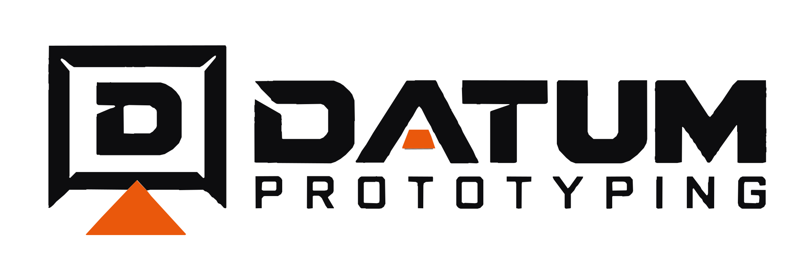
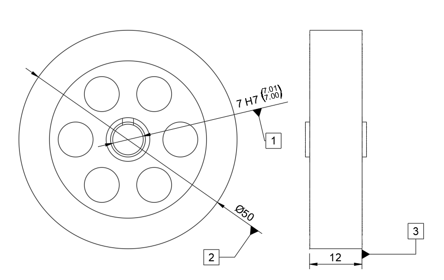

Førsteemnekontrol · FAIKontrolleret dokument · Datum Prototyping
Dokument-IDFAI-03-FLYWHEEL
RevisionA
Udstedt2026-10-06
Side1 / 1
First Article Inspection
Svinghjul
Måleresultater dokumenteret mod det angivne fremstillingsgrundlag for Flame Eater Engine-projektet.
Samlet resultatGodkendt

Tabellen kan rulles vandret på små skærme.
| Nr. | Karakteristik / feature | Nominel | Tolerance | Målt | Status |
|---|---|---|---|---|---|
| 1 | Centerhul Ø | 7.000 mm | +0.015 / 0.000 (H7) | 7.010 mm | PASS |
| 2 | Svinghjul diameter | 50.000 mm | ±0.100 | 50.000 mm | PASS |
| 3 | Svinghjul tykkelse | 12.000 mm | ±0.100 | 12.040 mm | PASS |
Bemærkninger
Centerhul og hovedmål er kontrolleret mod tegningen. De registrerede mål ligger inden for de angivne tolerancer.